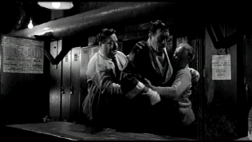

| Requiem for a Heavyweight/ B+, B+ |
| Columbia/1962/86/ANA 1.85/PS 1.33 |
Originally a 1956 teleplay by Rod Serling (Twilight Zone creator) written for the live television show Playhouse 90, Requiem for a Heavyweight was turned into a movie with Anthony Quinn in the role originated by Jack Palance. Anthony Quinn's Mountain Rivera is wonderful. He's a giant of a man, beastly in stature and movement, but tender, a man of great loyalty, and even in his slurred voice and puffed and pounded face, the man has dignity. In some ways you can recall the Brando " I could a been a contenda" speech when Mountain expresses his disappointment in his manager Maish. "I never took a dive in a 101 fights." It emotionally true to the character and Quinn is rock solid perfection itself.
 |
|
Mountain's triangle. ©Columbia |
Director Ralph Nelson opens the film with a
fabulous bar room pan across a sea of real-life veteran boxers to lead
into the punched out world of Mountain Rivera. It's a stark dose of
reality that announces skillful insight into the material. Almost every
boxing drama that I recall feature elements of mob corruption and fixed
fights. It's close to a Hollywood tradition. It's a natural part of Requiem
for a Heavyweight. The ring scenes are short and few; although this is
a film about boxing, it doesn't take it's pleasure from the ring but from
the characters. I think it's a wise choice. What we do see is simple,
brutal, and concise delivering a knock-out treatment from the Rod Serling
script.
Requiem for a Heavyweight is trimmed with
fine scenes. What an unusual and tender relationship is built on the
improbable combination of the gruff, awkward Mountain, and Grace Miller's
unemployment agency worker who tries to help Mountain find a new path.
There's a moment when Mountain recalls the history of his relationship
with Maish to Grace Miller, noting the time Maish cried for him after a
fight. Mountain clings to his belief in Maish and the memory helps to
cloud his already fragile vision. A fortuitous casting choice has Cassius
Clay (Muhammad Ali) playing himself as Mountain's last ring opponent.
Posters announcing the Clay/Rivera fight also remind us of Clay later in
the film.
Nelson's fine sense for the material brings the right
ominous camera angles to make periphery characters look tougher; in fact,
they look so oily they almost slide around the frame of the image.
Laurence Rosenthal delivers a solid score to compliment the material of
the material. The limited, closing space of the trapped rat sequence is
effectively captured in the music.
Along with Quinn's touching performance as
Mountain, Jackie Gleason and Mickey Rooney form a perfect triangle to
anchor the power and reality of Requiem for a Heavyweight. Maish
Rennick is one of Jackie Gleason's finest screen moments, comparable to
his outstanding turn as Minnesota Fats in The Hustler.
Gleason moves through an interesting range of emotions, especially in his
interaction with Mountain who he has managed for seventeen years. Maish is
one of those shady characters that have good traits too, but he's caught
between the rock and the hard place in Serling's screenplay. Mickey Rooney
is excellent as Mountain's cut man Army. Mickey shows enormous love in the
film. He's protective of Mountain, but he doesn't know how to act on his
impulses. Rooney makes us care about the slightly simple Army. And
Julie Harris is a fine choice for Grace.
The gritty look of the world
of Requiem for a Heavyweight is transferred elegantly to DVD.
Excellent source elements make a fine DVD production possible. The black
and white image exhibits fine gray scale range and subtlety. Shadow detail
provides the proper shades for a look into the world of professional prize
fighting. Blacks are rock solid. The image is consistently sharp.
Close-ups reveal the soul behind the eyes. Every facial pore is delineated
perfectly. There are specs of dirt that crop up here and there, but the
instances are isolated and the overall feel is very theatrical. The mono
sound is very clean. The dialogue is easy to understand. Not a word of the
fine script is lost. Even Mountain's slurred speech is delivered with
clarity.

Selections from the Feature
Archive include articles on Akira Kurosawa, Frank Darabont, Blonde Bimbos, Hollywood Street Gangs, or Vietnam: The Hollywood Pariah, and many
more....

Hail, Hail, the Gangs in Hollywood
From Angels with Dirty Faces to West Side Story to Menace II Society, Hollywood has depicted youth gangs as reflections of the times.

Selections from the Feature
Archive include articles on Akira Kurosawa, Frank Darabont, Blonde Bimbos, Hollywood Street Gangs, or Vietnam: The Hollywood Pariah, and many
more....
Anthony Quinn 
A larger than life screen presence brought joy to audiences for six
decades. Anthony Quinn had a rare zest for life that was
invested in many of his roles. Long live his memory. Click on the image
for a look at his career.


Mystery writer Fred Hunter digs into classic films on DVD. Check out his
insightful reviews at The Classics on DVD.
 The Cinematheque is a cultural,
arts organization that programs year-round specialty film series at the
newly renovated, landmark 1922 Egyptian Theatre on
Hollywood Boulevard!
The Cinematheque is a cultural,
arts organization that programs year-round specialty film series at the
newly renovated, landmark 1922 Egyptian Theatre on
Hollywood Boulevard!
 Brad Lang
continues to add more interesting material to the extensive collection at Classic Movies.
Everything from actors and actress to your favorite directors is linked at
the site.
Brad Lang
continues to add more interesting material to the extensive collection at Classic Movies.
Everything from actors and actress to your favorite directors is linked at
the site.

Doug Pratt's been doing almost longer than anyone in the business,
reviewing laser discs, that is, and now DVDs too. The venerable Laserdisc
Newsletter has been publishing since 1984. Pratt probably has a large
enough stock of laser discs in his house to build a DVD-proof bomb
shelter. Check out his on-line reviews at DVDlaser.com.

General, The /A,B+

Irish gang leader Martin Cahill through the lens of John Boorman makes
fascinating viewing. Watch it in black and white, Boorman's choice